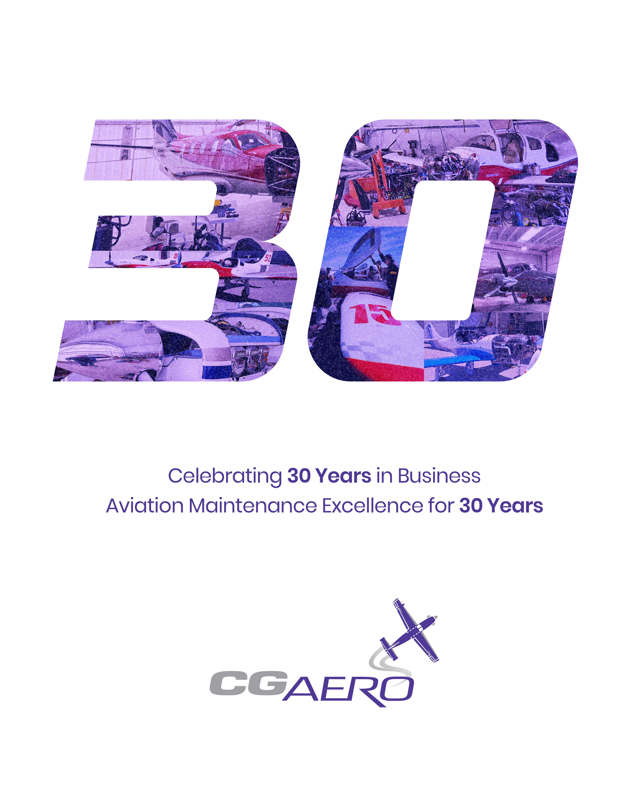
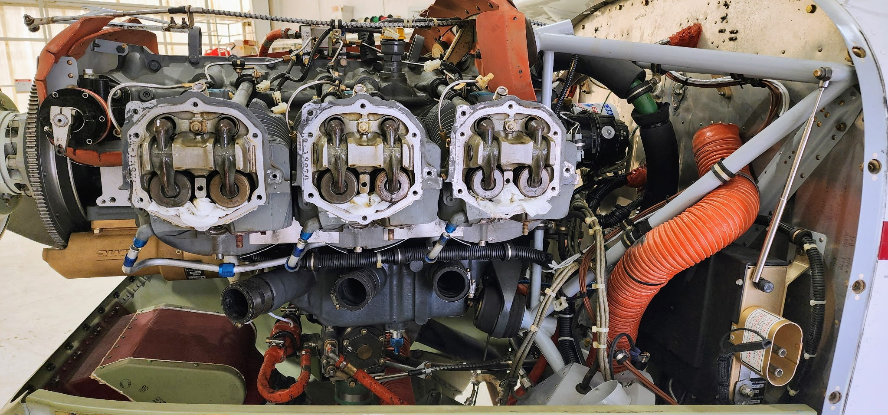
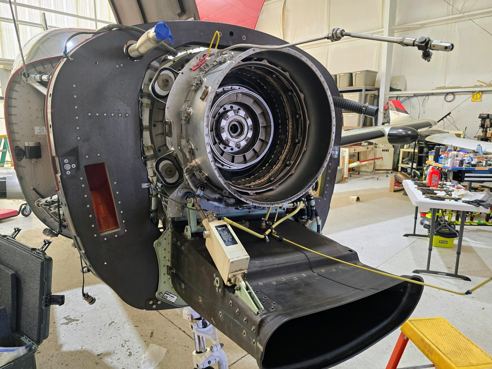
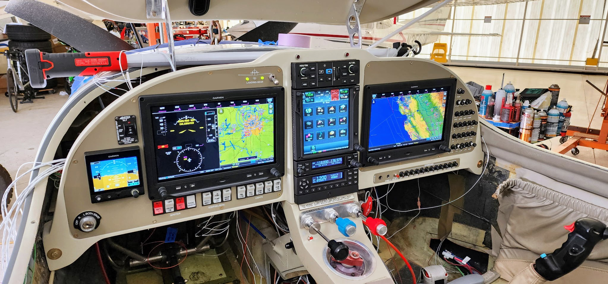

Established in 1996, CG Aero Corp provides trusted aircraft maintenance services at Monterey Regional Airport.
Led by over 40 years of hands-on aviation experience.
Dedicated aircraft care backed by decades of expertise.

Founded in 1996, CG Aero Corp was built from a lifelong dedication to aviation.
Our leadership brings over 40 years of hands-on aircraft experience, combining technical expertise, craftsmanship, and attention to detail in every aircraft we maintain.

Full service aircraft maintenance for piston and turbo-prop aircraft. Aircraft management and aircraft sales available.

Annual inspections, phase inspections, pre-purchase inspections, 100-hour and 50-hour inspections.

Dynamic propeller balancing, wheel & tire balancing, CorrosionX and Boeshield airframe treatments.




Monterey Regional Airport (KMRY)
1202 Airport Rd
Monterey, CA 93940
(831) 642-0700